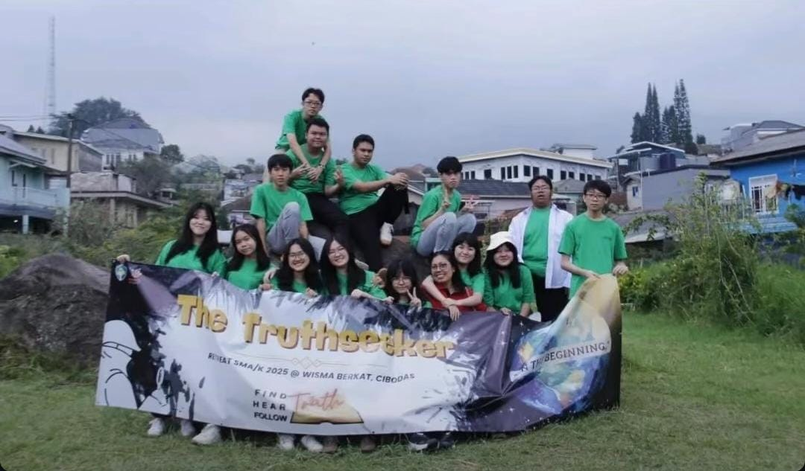
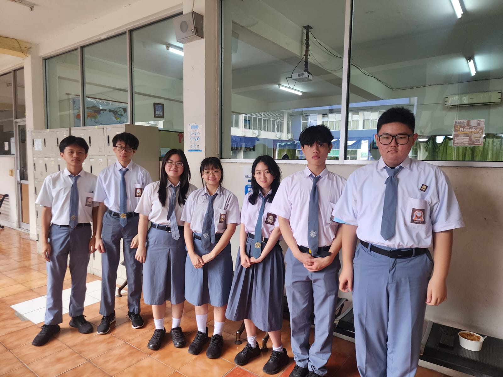
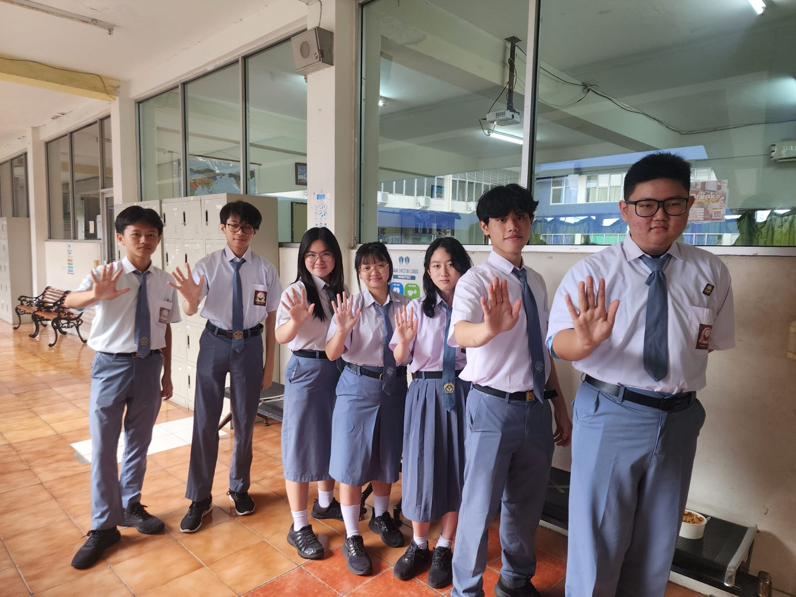
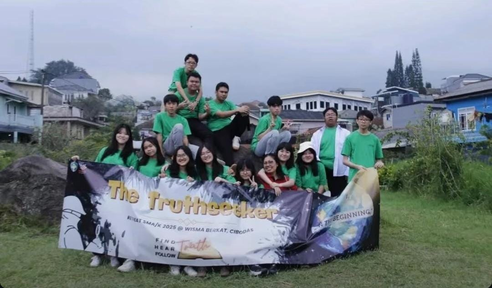
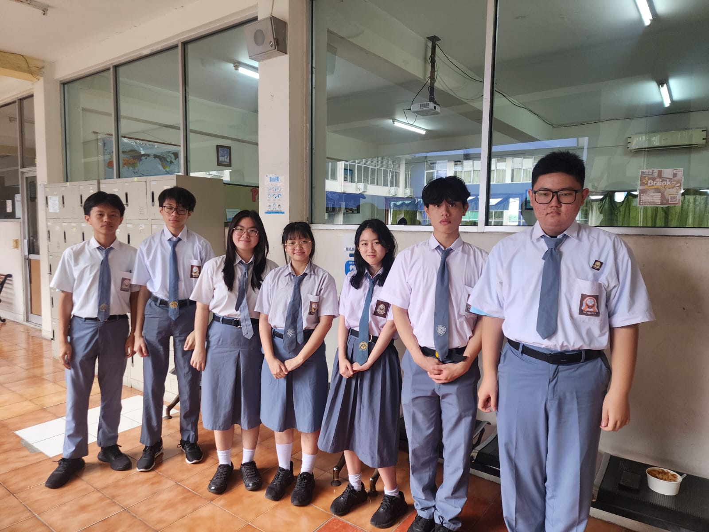
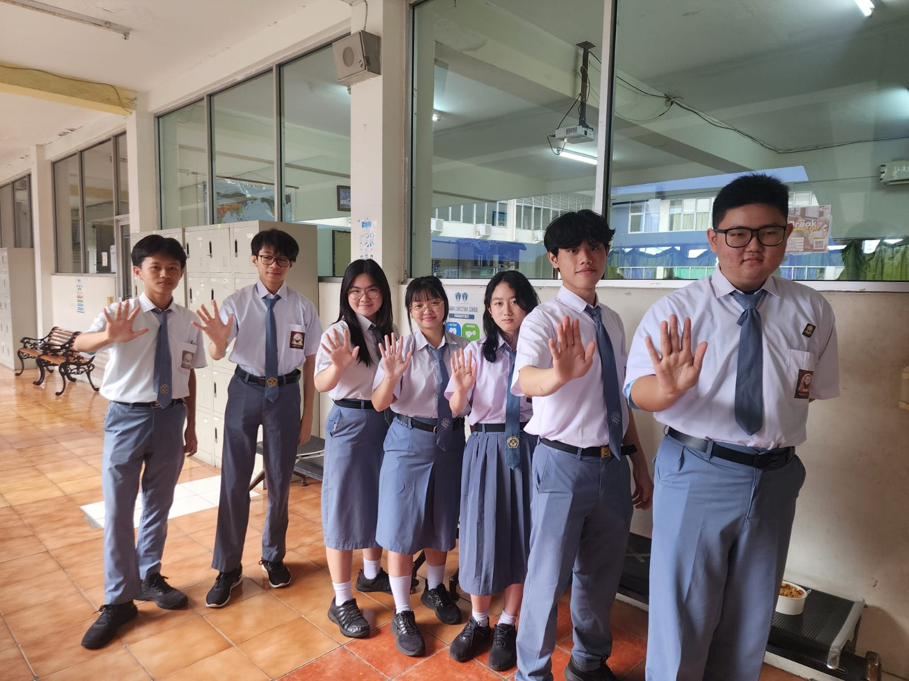

Attention Deficit Hyperactivity Disorder atau ADHD adalah istilah medis untuk gangguan mental berupa perilaku impulsif dan hiperaktif.
Informasi lebih lanjut:
More About ADHDKonsentrasi orangS yang memiliki ADHD dapat ditingkatkan melalui permainan edukatif.
Card MemorizingBerisi informasi mengenai bagaimana orang ADHD dapat bertahan, berperilaku, maupun berinteraksi di dunia nyata.
ADHD in Real Life 





Website ini dibuat sebagai pertanggungjawaban atas proyek PTS Biologi, Pendidikan Pancasila, Mulok, dan BK. Kami berharap website ini dapat berguna dan bermanfaat.